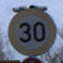

Recognition of traffic signs is a challenging real-world problem of high industrial
relevance. As autonomous vehicles, such as Google’s ‘self-driving car,’ become more
prominent, the ability to detect and recognize informational road signs is
of elevated importance.
Road sign detection and classification faces the same challenges as many other detection
tasks, namely that of shadows and outdoor lighting conditions obscuring the signs.
A useful detector must, therefore, be able to cope with rotation, different
lighting conditions, perspective changes, occlusion and all kinds of weather conditions.
For the recognition of traffic signs, the dataset used is from the
German Traffic Sign Recognition Benchmark
The training set contains 31368 images in 43 classes. A test set which has 12630 images is also provided.


The training set contains 31368 images in 43 classes. A test set which has 12630 images is also provided.

SigNet is built with:
- Python 3.6+
- JupyterLab
- Fastai: An awesome deep learning library that is built on top of PyTorch
- Starlette: A lightweight ASGI framework/toolkit, which is ideal for building high performance asyncio services.
A pre-trained resnet34 model is used to perform tranfer learning on the dataset. The code for the project can be found on github.
I am constantly looking out for opportunities to learn and build cool stuff; feel free to reach out to me on: